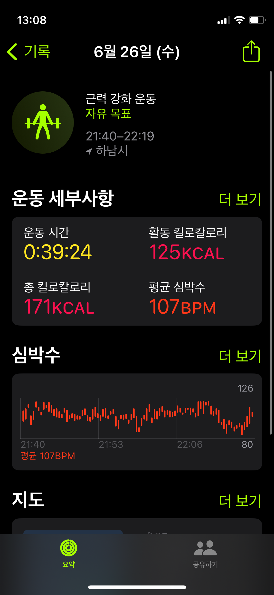

Code
1 + 12렌더 단축키는 ctrl+shift+k ## Quarto
Quarto enables you to weave together content and executable code into a finished document. To learn more about Quarto see https://quarto.org.
When you click the Render button a document will be generated that includes both content and the output of embedded code. You can embed code like this:
1 + 12You can add options to executable code like this
4The echo: false option disables the printing of code (only output is displayed).
오늘은 마크다운 연습을 했다. 언제쯤 마크다운이 쉬워질까 일주일..아니 하루면 익숙해질 수 있겠지
마크다운에는 순서가 있는 리스트와 순서가 없는 리스트가 있다.
이미지도 삽입할 수 있다. 
이미지도 사이즈도 조정 할 수 있다.

인용구도 삽입할 수 있다. > 순망치한
코드도 표현할 수 있다. 인라인 코드는 백틱으로 감싸고 코드 블록은 세개의 백틱을 감싸서 작성한다.
print("안녕하세요)"
if 1<2:
print("하이")if 1<2:
print("하이")하이수평선도 추가할 수 있다.
ctrl+Alt+I1+1+1+1+1+16#|로 시작함.echo 옵션: 코드를 문서에 보여줌eval 옵션: 코드를 돌릴 것인가, 그냥 둘것인가를 결정```{python}
#| eval: false #그래서 아래 결과값이 안나옴
1+1
```인라인 수식: $하나로 감싸준다.(본문에 입력) 문장안에 숫자 \(5^2\)를 넣어보자. 숫자5^2를 넣어보자
디스플레이 수식: $두개로 감싸준다. (독립적인 문단)
\[ \sqrt{2}^{3}_{1} \]
첫번째 수평선
두번째 수평선
두번째 수평선
각주도 표현할 수 있다. 이것은 간단한 각주1입니다.
각주를 여러 줄 써야 할 경우 각 새줄 앞에 2개의 공백을 추가한다.
이것은 각주가 여러줄로 달리는 경우2입니다.
각주3입니다.
이름이 지정된 각주4입니다.
문장 안 각주도 넣을 수 있다고 하는데? [^이것은 인라인 각주입니다. 아 이 안에 쓰면 각주로 나오는 구나!]
==하이라이트==를 표시해 보도록 하겠습니다.
체크박스를 표시해보겠습니다.
자동으로 체크박스 변하는거 여기서도 될까? ctrl+l
그림 크기를 조정해보겠습니다.
이항정리(Binomial Theorem)는 이항식의 거듭제곱을 전개할 때 사용되는 중요한 정리입니다. 이 정리는 다음과 같이 정의됩니다:
\[ (a + b)^n = \sum_{k=0}^{n} \binom{n}{k} a^{n-k} b^k \]
여기서, \(\binom{n}{k}\)는 이항계수(binomial coefficient)로서 다음과 같이 정의됩니다:
\[ \binom{n}{k} = \frac{n!}{k!(n-k)!} \]
이항정리는 다음과 같은 이유로 중요한 의미를 갖습니다:
이항정리를 이용하여 \((x + y)^3\)을 전개해보겠습니다:
\[ (x + y)^3 = \sum_{k=0}^{3} \binom{3}{k} x^{3-k} y^k \]
각 항을 계산하면:
따라서, 최종 전개식은:
\[ (x + y)^3 = x^3 + 3x^2 y + 3x y^2 + y^3 \]
이항정리는 다양한 수학적 및 실용적 문제를 해결하는 데 강력한 도구가 됩니다.